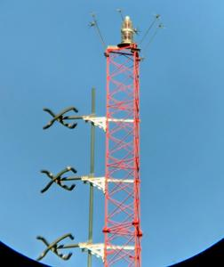
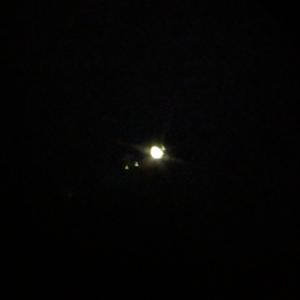

Ever since I got into backyard astronomy and found out you can actually build your own telescope, I’ve drempt of building my own. Well, seeing how we live in the future - we can instantly communicate with people from all over the world, a never-ending repository of knowledge is accessible online at any given time... and now, we can 3D print physical things that never existed mere moments ago! I was able to make my dream come true!
A very talented telescope-maker created a design and made the files available on Thingiverse where it was a featured post on the front page for a while (very deservingly). The user, Fatalik, designed this telescope: the ABSDBS-8″. I found it, my jaw dropped, then I immediately began printing!
It took me many, many days (yes, days) to print all of the pieces. Then I spent a lot of time (and money) finding and buying all the necessary hardware and other components needed for the build. (Lots of M3, M4, and M5 screws and nuts!) Even though it took weeks to get the mirrors (shipped from China) and aluminum tubing for the trusses (not something commonly stocked at home improvement stores apparently), I had plenty of building to do to keep me busy in the meantime.
I used these mirrors for my version of the ABSDBS-8″ Specs:
- Primary mirror diameter: 203mm (8″)
- Focal length: 800mm (31.5″)
- Focal ratio: f/4
*This is important because the distance from your primary mirror to your secondary mirror is determined by the focal length. These mirrors have a short focal length (and FAST focal ratio) so this version of the ABSDBS-8″ is physically much shorter than the original design.

The images below illustrate the process I took to determine the optimal length and position of my truss tubes. I wanted the focuser to be in the middle of its range of motion (travel) when the image in the eyepiece is focused. I found that the truss tube length should be 59-60cm long when measured from the bottom of the tube clamp to the top of the opposite tube clamp.
The nice thing about the shorter telescope is that one, it’s smaller and easier to move. And two, it’s lighter, which also means I didn’t need a counterweight underneath the primary mirror. (However, depending on what’s mounted to the focuser end – finder scope/laser pointer, etc. – a small counterweight might be needed on that end instead.)

I did a quick collimation and got a decent view of the top of the radio tower out back, but unfortunately it’s not nearly good enough for actual astronomy as illustrated by this poor image of Jupiter (and moons). It seems a lot of time and precise adjustments will be needed to get this scope perfectly aligned and collimated.